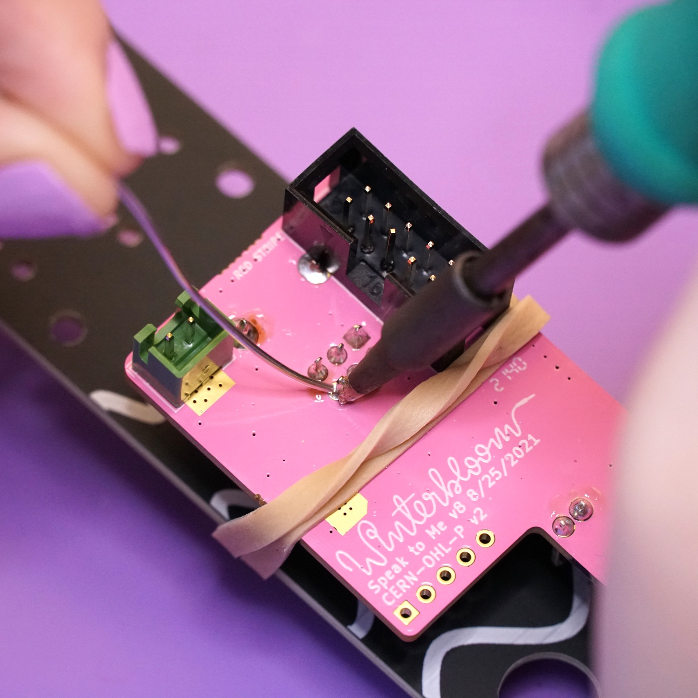
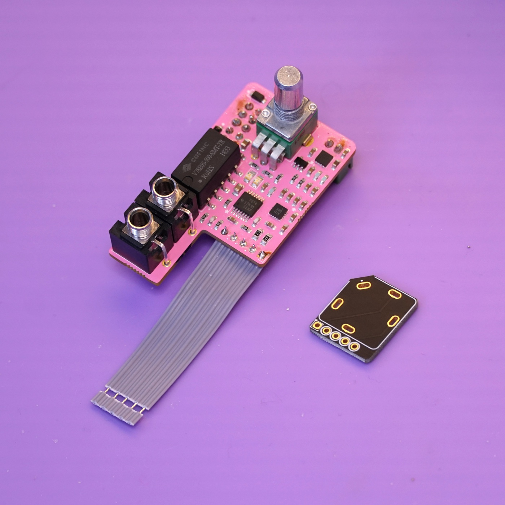

Build#
Welcome to the build guide for Speak to Me's DIY kit. We hope you have a great time putting this module together and a wonderful time using it.
Please read all instructions thoroughly before starting. If you have questions or run into trouble please reach out to us on discord or drop us an email at support@winterbloom.com.
This kit is a beginner-level kit, but it does have a few tricky parts. If it's your first time soldering we recommend reading through Adafruit's guide to excellent soldering and practicing a little before jumping in.
This build takes around two hours to complete.
Tools required#
Before you begin, make sure that you've got:
- Safety glasses. Yes, really. A pair like these are fine.
- Proper ventilation, like this small filtered fan.
- A temperature-controlled soldering iron, like this Hakko or the Pinecil. It is very important to use a temperature-controlled iron, since unregulated irons can easily get hot enough to damage components. You should set your iron temperature based on your solder manufacturer's recommendations.
- Solder. We recommend Adafruit's SAC305 solder or Kester 275 K100LD.
Flux
We suggest using solder with "no clean" flux. If you use a different kind of flux, be sure to carefully clean the flux residue off based on the guidelines provided by the manufacturer of your solder. Take special care with the LEDs and potentiometers, as they can be damaged by water and flux cleaners.
Kit contents#
Your kit should contain the following items. If any are missing please email us at support@winterbloom.com.
- (1) Mainboard
- (1) Front panel
- (1) Headphone jack breakout board
- (1) Stereo potentiometer, including nut & washer
- (1) Speaker
- (1) 20mm aluminum knob
- (4) M3x12 black hex bolts
- (4) M3 nuts
- (1) Grille cloth
- (1) Speaker spacer
- (1) 2mm L wrench
- (1) 2.5mm L wrench
- (1) 5-position flat flex cable
- (2) 1/8" jacks, including nuts
- (1) 1/4" stereo jack, including nut
- (1) JST XH-2 header
- (1) JST 2-pin wiring harness
- (1) Eurorack power header
- (1) Rubber band
Soldering the power header#
Your first task is to place and solder the power header and JST header to the mainboard.
Start by placing the power header onto the back side of the mainboard, being careful to align the notch in the header with the drawing on the board. The power header fits snugly, so you might have to give it a little pressure to push it all the way in.
Flip the board over to the front side and solder the header's 10 pins. Take care not to damage any of the nearby components.
Next, place the JST header on the back side of the board. Just like with the power header, align the header with the drawing on the board. The header should not hang over the edge of the board.
Flip the board over and solder the JST header's two pins.
Placing the front side components#
Next up is placing the components on the front side of the mainboard. You'll need the 1/8" jacks, the stereo potentiometer, the front panel, and the rubber band for this section.
Start by placing the potentiometer on the front side of the board. You might need to slightly straighten out the legs of the potentiometer to get it to go in - don't use excessive force to push it in. Remove the nut and washer on the potentiometer and set it aside for now.
Continue by placing the two 1/8" jacks on the front side of the board. Be sure to get the little flexible third leg into its hole.
Using the front panel as a jig#
Since the potentiometer and jacks need to peek through the front panel, you can use it as a jig to make sure everything stays in the right place while soldering. Carefully line up the front panel's holes with the potentiometer and jack and push the front panel on.
Use the rubber band to temporarily hold the front panel on while you're working on it. You'll need to double- or triple- over the rubber band to get it tight.
Soldering the front side components#
With everything held in place, you can now flip the module over and solder all of the front panel components in place. As you go, take a moment now and then to check that everything is flush with the panel and mainboard.
Start by soldering the two 1/8" jacks.
Next up is the potentiometer. This one can be a little tricky so read through all of these instructions and use caution. First, move the rubber band slightly to get a clear look at the potentiometer's holes.

Next, solder the two large legs of the potentiometer one at a time. When soldering the one next to the power header, be careful not to melt the power header with your iron. After soldering the first one, double-check that the potentiometer is flush with the mainboard and adjust if needed.
With the two legs soldered, finish up by soldering the six remaining pins.

Soldering the flat flex cable to the mainboard#
Next up is soldering the flat flex cable to the mainboard.
Prepare the flat flex cable by removing the cover on one side of it. Just pull up lightly to get the cover to come off- do not cut the flat flex cable.
Push the exposed conductors of the flat flex cable through the matching holes on the motherboard. This is designed to go together easily, just be take care not to bend any of the conductors.
With everything in place, solder the five flat flex cable conductors to the motherboard.
Soldering the flat flex cable to the headphone breakout#
With one side of the flat flex cable done, the next step is to connect the other side to the headphone breakout board.

Just like in the previous step, remove the cover for the flat flex cable. Push it through the matching holes on the headphone breakout board. Note the orientation of the breakout board relative to the mainboard. The side without any text is the front side and should be facing the same direction as the front side of the mainboard.
Double check the orientation and then solder the flat flex cable in place.
Soldering the 1/4" jack#
Next up is soldering the large 1/4" jack to the jack breakout board. Before starting, remove the nut and washer from the jack and set aside.
Place the jack on the front side of the breakout board. The jack has one slanted side so that it can only go in one way. The jack's legs will not go all the way through the board so don't use excessive force to place it.
Solder the legs of the jack and take care not to melt the flat flex cable.
Preparing the speaker#
With the mainboard complete, your next task is to prepare the speaker. You'll need the speaker and the JST wiring harness.
Un-twist the end of the leads a little and solder the leads to the eyelets on the speaker. For Speak to Me, polarity does not matter, however, if you like to be thorough and proper the speaker's eyelets are marked with "+" and "-". Solder the black lead to the "-" eyelet and the red lead to the "+" eyelet.
At this point you are done soldering! You can put your iron away if you'd like.
Mounting the speaker#
Now that the speaker has its cable, your next task is to mount it to the front panel. You'll need the speaker, panel, grill cloth, speaker spacer, the four M3 bolts and nuts, and the 2.5mm L wrench.
Start by pushing two of the bolts through the mounting holes on the front side of the panel and then placing the panel face-down with the bolts sticking up. Put the bolts on opposite corners - one at the bottom-right and one at the top-left.
Next, place the grill cloth through the bolts and flush up against the panel.
Now place the speaker spacer through the bolts and flush against the grill cloth.
Then place the speaker through the bolts and flush against the spacer. The bolts might be a bit tight here, if needed, flip the assembly over and use the 2.5mm L wrench to screw the bolts through.
Take one of the M3 nuts and attach it to the bolt on the top of the speaker. Don't fully tighten it yet.
Do the same with the bolt on the bottom of the speaker. The speaker's eyelet might be in the way a little, you can bend it very slightly up to give yourself a bit more space. You can use the 2.5mm L wrench to back the bolt out a bit if needed.
Add the remaining two bolts and nuts. These bolts will have a lot more resistance than the first two and you'll need to use the 2.5 L wrench to screw them through the grill cloth, speaker spacer, and speaker to reach the bolt.
Finally, tighten all the bolts carefully with the 2.5mm L wrench. They should be snug but do not over-tighten then as you could crack the speaker spacer.
Mounting mainboard to the panel#
With the speaker mounted to the panel, it's time to mount the mainboard. You'll need the panel assembly, the mainboard, the nuts for the 1/8" jack, the jack and washer for the potentiometer, and the jack and washer for the 1/4" jack.
Place the panel over the 1/8" jacks and the potentiometer - the same way you did when using the panel to align components before soldering them.
Use the potentiometer's washer and nut to secure it to the panel.
Secure the two 1/8" with their nuts.
Push the large 1/4" jack through its hole in the panel. The flat flex cable will need to bend a bit to get it all to line up.
Use the 1/4" jack's washer and nut to secure it to the panel.
Adding the volume knob#
You're almost done! Next up is putting the volume knob on. You'll need the 2mm L wrench for this section.
Using the 2mm L wrench, loosen the grub screw inside the knob. Don't completely remove it, just loosen it enough so that it's not obstructing the hole in the center.

Before placing the knob, turn the potentiometer manually all the way counter-clockwise. Place the knob over the potentiometer's shaft with the white stripe pointing to about 7 o' clock.
Use the 2.5mm L wrench to tighten the grub screw and secure the knob to the potentiometer's shaft.
Plugging in the speaker#
The last step is to plug in the speaker. Flip the module over and grab the speaker's JST cable.
Push the end of the JST cable into the JST header on the mainboard. It might take a little bit of force to get the cable to snap into place.
All done#
Congratulations! You've finished your very own Speak to Me!
Now that it's all put together go check out the User's Guide and please show us your work by tweeting at @wntrblm or tagging @wntrblm in your instagram post.